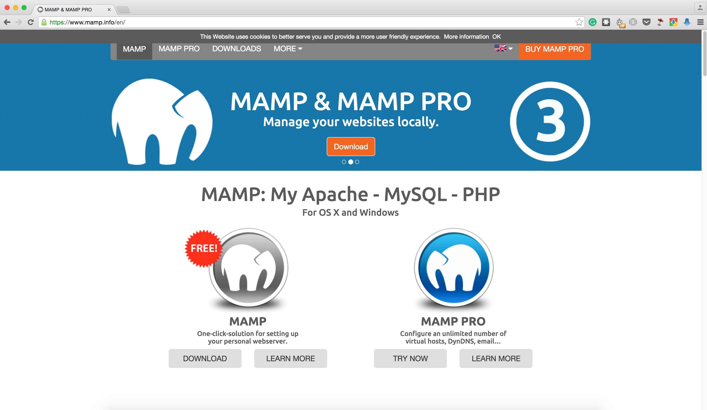
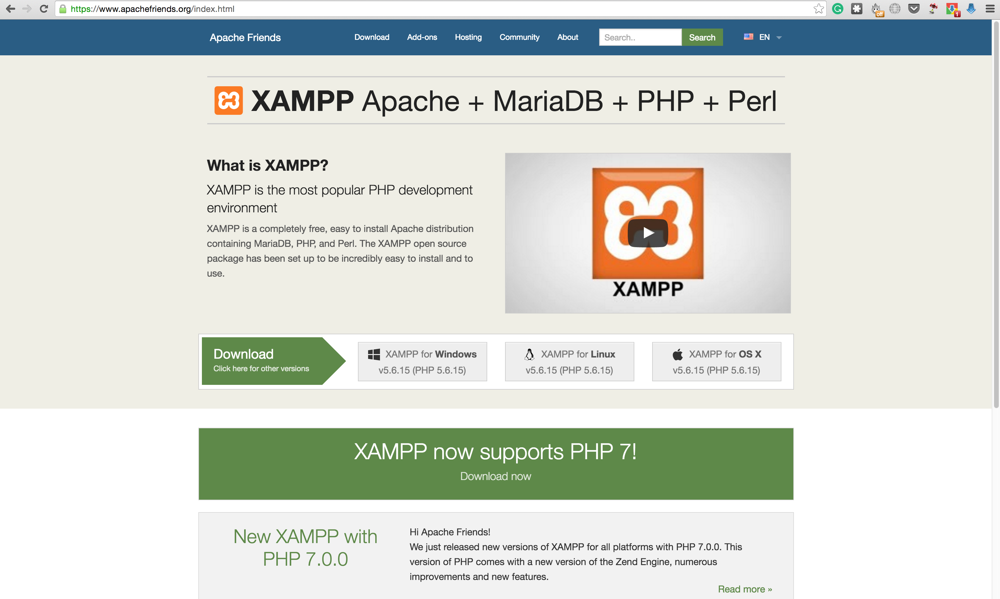

Installing PHP
One of php's main selling point is how easy it is for a beginner to set up the environment.There are plenty of dedicated apps that make one's life very easy.
Below are just but a few of those dedicated apps on different operating systems.
Mac
PHP comes pre-installed on Mac OS. However, it can be a pain configuring so that all the parts needed ie. php, mysql and apache work harmoniously.
For this reason, we shall be taking the cowards way out ;-) and installing MAMP. Below are screenshots for the entire installation process.
-
Go to the MAMP website 
-
Download the MAMP free version
-
Click on the MAMP .pkg to install.
Windows
- Go to the XAMPP website 
-
Download linux XAMPP. During the making of this documentation the XAMMP version was 5.6.8-0.
-
Click on the installer to install.
Linux
PHP comes pre-installed on any Linux OS. However, it can be a pain configuring so that all the parts needed ie. php, mysql and apache work harmoniously.
For this reason, we shall be taking the easy way out and installing XAMPP. Below are screenshots for the entire installation process.
-
Go to the XAMPP website
-
Download linux XAMPP. During the making of this documentation the XAMMP version was 5.6.8-0.
-
Go to the directory where the XAMPP download exists
-
Make the XAMPP package executable as shown below. Please remember to use the correct download name, for my case it is xampp-linux-x64-5.6.8-0-installer.run.
sudo chmod +x xampp-linux-x64-5.6.8-0-installer.run -
Now, install XAMPP stack as shown below
sudo ./xampp-linux-x64-5.6.8-0-installer.run -
You’ll be asked to answer a couple questions. Go with the defaults. Press Y to accept the defaults.
-
To start XAMPP use the command below
sudo /opt/lampp/lampp start -
The sample output will be
Starting XAMPP for Linux 5.6.8-0... XAMPP: Starting Apache...already running. XAMPP: Starting MySQL...ok. XAMPP: Starting ProFTPD...ok. -
Now test Xampp in your browser [Firefox/Chrome]
http://localhost -
To Stop XAMPP use
sudo /opt/lampp/lampp stop